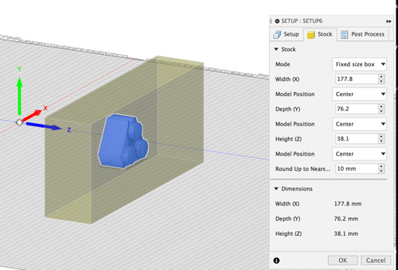
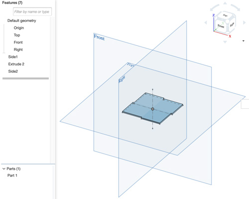
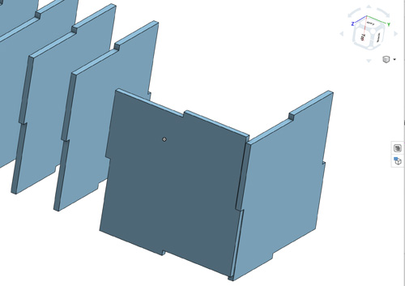
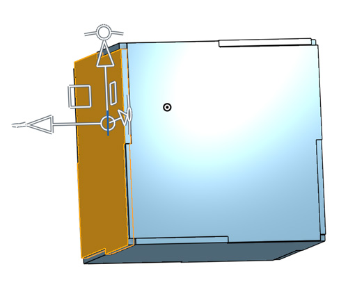
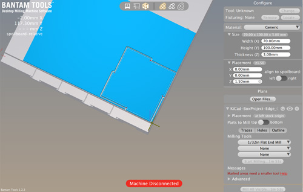
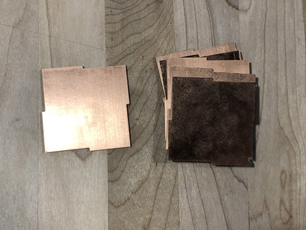
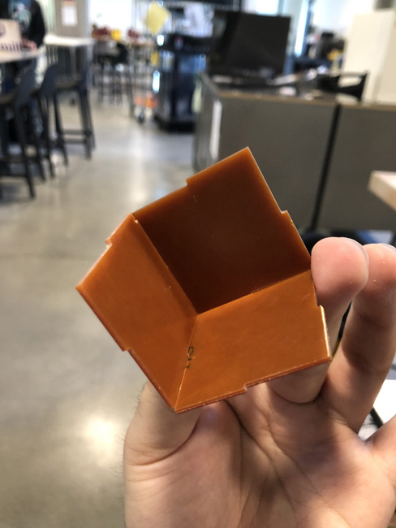
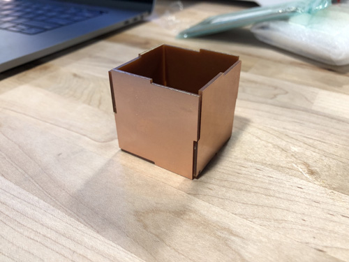
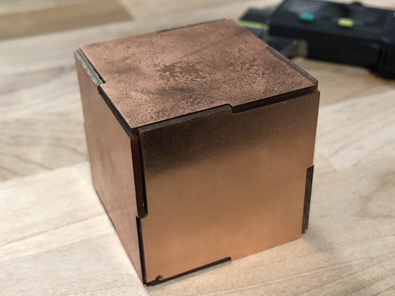

TL;DR: Milled something, created a mold of said something, casted copies of the something using the mold.
Lego pieces are amazing -- unfortunately, there are no individual triangular pieces with three connectors, so it might be interesting to come up with an interpretation of what said piece would be like, to then mill it out of wax, and create plaster copies of it.
I started working on potential ways to create a triangular piece, so spent quite a bit of time on exploring the sizing starting with a regular 2x2 piece.
OnShape sketch for a 2x2 lego brick
Extruded sketch for a 2x2 lego brick
Trying to play with a triangle shape
Maybe I need to chop the triangle with a hexagon to make it a truncated hexagon

Experimenting with the connector placement
After struggling a bit with the possible ways to make this fit an actual lego set, I decided to explore the internet to see other approaches (I realized there would be zero ROI if I spent any longer working on my own implementation).
There was a great model that might probably not fit a Lego set, but aligned nicely to the ideas I was exploring and would be perfect for this assignment in SketchUp's 3D Warehouse
After stealing downloading the SketchUp file, I converted to STL, and imported into Fusion 360.
STL for the triangular lego imported into Fusion 360
I started to play around with adding a stock directly in Fusion 360 that would represent the machinable wax

Model showing the lego inside to the machinable wax stock
I started simulating the process of milling the stock to get the part
Model showing the lego inside to the machinable wax stock
With the toolpaths ready, I exported to GCode
I then realized that the stock was unnecessarily huge, so I'd deal with it directly on Bantam Tools. I adjusted the stock to be slightly larger than the Lego object.
WAX TIME!
At this point several things happened:
- I had to get machinable wax at the CoMotiuon space at UW.
- The machinable wax we used for the class did not fit the Othermill

I then created the actual part -- starting with a 5 centimeter square, that I later changed to 4cm (to optimize for material) because each FR1 board was 7cm * 10cm -- this would allow me to do 2x parts per FR1 board.

After extruding the part for the 1.5mm that the FR1 measured, I had the main part for the box.

Before manufacturing, I verified that the part actually worked.

It did!

I exported the DXF into KiCad to create a Gerber file.

I imported the Gerber file into Bantam Tools, which looked right.

Once at the Mill, I followed the recommended instructions to prep the job -- e.g. creating the FR1 sandwich and using double-sided tape. I then entered the resulting measures in Bantam Tools.

And off it went:

The outcome of the milling was pretty nice.

After some light assembly

Added more sides:


The final box resting fully assembled with all the sides holding up.

The box fit really well, but needed some careful touch to stay assembled.
The floor is lava lvl:CIA vault... or me assembling my box using crappy butt joints.
Note to self: BUTT JOINTS SUCK (for this assignment).
Source files for the box: